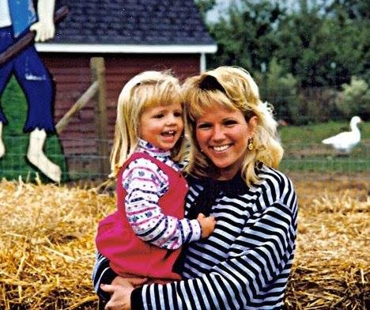

Jane
An Interview with my mother, Jane Recker
Thanks for doing this, Mom. OK - first question. Let's first talk about where you were born. What kind of town was it? What did the average person probably look like socioeconomically? Do you think where you were born shaped who you are significantly? How so?
So that was my identity…a Dutch girl living in a very Dutch family going to a Dutch Christian Reformed Church. Oh, I also attended a Christian grade school and Christian high school, which were both predominantly Dutch Christian Reformed. I think I grew up rather sheltered.

Figure 1: Jane's family minus her youngest sibling. She is in the middle, wearing glasses and sporting the bedhead look, long before it was cool
My dad was a carpenter. He worked hard. After emigrating to this country in his early twenties, he found a vocation in which he could provide for his five kids (I was the middle child). My mom was a busy stay-at-home mom, who always had banana bread or chocolate chip cookies waiting for us on the counter after school.
Yes, I think where and how I grew up shaped who I am because I grew up in a humble family that didn't get everything we wanted. Although we never wanted for anything…does that make sense?
Saturday nights were a big deal cuz my Dad took us to Burger King for dinner, and we loved it! And during the summers, we belonged to Willlowbrook Pool. Every day in the summers we hung out there. I felt that was a luxury for us. And I remember a vacation when I was about eleven or twelve. We all took a plane to Fort Lauderdale, Florida. That had to have cost my dad a lot - seven plane tickets.
I babysat a lot in my early teens…then I could buy clothes I didn't need, but rather wanted. And the day I turned sixteen, I had to get a real job. I did, as a waitress at Poppin' Fresh Pies (now Baker's Square).
Yes, my childhood shaped who I am today. I was taught to be frugal (Dutchness) and to appreciate God's blessings. The Christian Reformed Church, although rather legalistic, gave me the strong foundation I have today. I learned Catechism and learned why I believe what I believe. And I appreciate that Christian foundation. I had a good childhood.
What kinds of things got you really fired up when you were growing up? What sort of things were you into? What things were you pushed into that never really stuck?
Growing up? We played outside all the time… all day… everyday. It was so fun! Even during winter, we would take our sleds and walk by ourselves to Veterans Park, a few blocks away. They had an awesome ice rink and we would ice skate in the winter.
Or I would bike to my best friend's house in South Holland - Barbie Schepel. She was my childhood friend and her family was very good to me. My mom never really knew exactly where we were, but it was a safer time back then. We came home for dinner, and we came home (after dark) when we had to go to bed.
What was I pushed into? Piano lessons. I took them for 5 years and begged my mom to quit. Ha - I just remember hating the half hour I had to practice daily.
Anything you wish you spent more time doing when you were young? Any regrets? What was the most guilt you've ever felt growing up?
Gosh, are you my priest Alex?!! Haha…
Just trying to get in a broad range of questions. We'll move on. Who were the most influential people in your life growing up? Do you think they knew how much they affected you? Still in touch with them?
One person who had a huge impact on me while growing up was Bonnie. She is my older sister and has always been my best friend. Bon and I… we just clicked even back then. When she and Nick got married, I went to their apartment often, and just hung out with them…It was so fun for me! They had a huge influence in my life growing up. They strongly encouraged me to go to college, after waiting a year after high school. I did go for one year back then, and then Dirk and I got married. But fast-forward, and I'm almost a college graduate!
Can you name some people that you think you had a big impact on growing up? Any younger kids that followed you around a lot (besides your kids)?
Well, like I said, I babysat alot! So maybe I had an influence on some of those kids, but we'll never know. I probably started when I was twelve and did it for many years, even after I got a real job at sixteen. There was this one family I remember - I babysat four kids for an entire summer. It was overwhelming for me at age 14, but I learned to be responsible. One of the little girls in that family was named Kelly. She was so sweet and cute. I told myself that I wanted a "Kelly" when I had kids.

Figure 2: Rather than taking this 'Kelly', Jane did the honorable thing and just made her own 'Kelly' in 1988
Let's talk about growing up. What was going to college like for you? Were you nervous? Any teachers that had an impact on you? College - or you can go back to high school if you need.
Don't remember any teachers growing up that had a significant impact on me. But I have had several teachers at Trinity in the past few years that have encouraged me and made me believe that I can do it - master writing papers, get my degree, etc.
By the way, I was shy in school, growing up…shocking huh? I don't think anyone would describe me as shy today!
I just remembered you and Dad met in high school. Didn't mean to skip right over that. Let's go back to that. Do you mind talking about Dad? This interview is supposed to be all about you, but I think it's safe to say it was a significant time. When was the first you heard of him? Met him? First impressions?.
So yeah, I always knew who Dirk Recker was in high school, but didn't actually talk to him till Junior year. I had class before lunch with him and sat in front of him. We didn't have a cafeteria, so we ate lunch in our 4th period class. I figured it gave me more time to talk and flirt with him. I got his milk carton for him most days. He was cool. I definitely had a crush on him. I knew he was kinda wild, but that made him all the more cool. And I did go on dates with various guys throughout Junior year, but nobody that got my heart beating faster. I won't mention names, because I don't want any names in your blog… haha…!
Well, Dirk asked me out first week of Senior year. Our first date was Sept. 9, 1978. That date stays with me. That was also our first kiss. Ha! Crazy, I know…but I think it was "love at first date." I think after one more date, I told my mom I was gonna marry him. In fact, on our 2nd or 3rd date, Dirk had a heart-to-heart with me about his life, future dreams. He was very open and I was mesmerized by him. Senior year was fun. I feel like I only hung out with him and Lori Meter. We dated for 3 1/2 years and got married! The rest is history…

Figure 3: Jane with her husband, Dirk
Might be kind of a loaded question, but take it wherever you want. How was dating/marriage with dad changed you? What were some big obstacles you faced together? What was the hardest part of being a newly wed for you?
Whoa! So much in those 3 questions…it's my life!
Dating Dad was obviously in God's plan. I knew it immediately that I wanted to spend my life with him. I think all marriages begin based on infatuation/excitement. Real, deep love grows through a lifetime… through hardships and happy times.
The first year of marriage was tough. Sounds cliche, but we moved to Texas the day after we got married and ended up moving back 5 months later! Looking back, it seems like it was not a well-thought out decision, but it's part of our early marriage. And we grew more independent by living away from my parents.
Big obstacles? I think one of them was Dad getting a job that paid more than I was making! Haha…but seriously, we were 25, and wanted to start a family, with me staying home. Well, God provided and Dad got a better job, and then an even better one, etc. I loved being a stay-at-home mom. I was almost bored with just Kelly. But then when she was 18 months, oops…I was gonna have another one - you! Life was busy with 2 small children, but I loved it. We bought our first house in Schaumburg… stayed there 2 years and decided to build a new house in Schaumburg. Six months after moving in there, we decided to have another baby…and I got pregnant with Shack age 33.
However, her birth was difficult and we both almost died during birth. As a consequence, I had health issues till she was 5 months old. So it was a busy time. Dad was traveling a lot in his work. But God is faithful… we endured difficulty and it strengthened our faith and marriage. That was about my late 30s/early 40s. And that is about the time we became student ministry leaders - which was a highlight of about 10 years of my life - loved it! And I also subbed at CLA for about 10 years, which I also loved. I loved being with and talking to high school kids. So life was good throughout my 40s with our church life. Our kids were all excelling in school, and, oh yeah, with me going back to school.
At 40, at the encouragement of Bon and Kathy Dekker, I enrolled at Harper. Was there for 6 years - one class at a time. Then at age 50, I started at Trinity International, in the Adult REACH program. Will graduate May 2016 at age 54. Ha…college life for me started in 1980…ended in 2016. Wow - that's either embarrassing or shows my determination in life!
Think I covered everything…
That was a lot! But you don't have to squeeze the rest of it in one question. Is it OK if I ask about your near death experience? Were you aware of what was going on, or was it kind of hazy? Did you have any time to reflect on your mortality or anything like that?
Sure, it's OK to ask…
Labor with Shack - I encountered some difficulties. Even though you were Caesarean, they wanted me to try to have Shack vaginal birth. Big mistake…because the cord became wrapped around Shack's neck, and my uterus ruptured. They lost Shack's heartbeat, and I was bleeding internally. So it was an emergency C-section. After successfully getting Shack, they tried to suture me up internally and got a stitch caught in my ureter. Realizing this, they could do nothing then. After surgery, my kidney shut down.
Shack stayed a day or so in the hospital and went home without me. I went home a week later with a nephrostomy bag and told to come back for surgery to repair the ureter in a few months. It was depressing. I had 2 small kids to care for and a newborn. Kelly, who was 6 1/2 at the time was a HUGE help. I think she grew up quickly and learned to be responsible. I eventually had the repair surgery, at no expense to us cuz it was doctor error, and then recovery time. I became a "Case Study" at Northwest Community because of the mistake and how it can be dangerous to try vaginal birth after a Cesarean birth. Sarah was 5 months old before I felt 'normal'. No, I didn't have time to reflect on my mortality - but thank God we both survived. Someone told me during this time that there was an episode on some TV medical show, in which the pregnant woman's uterus ruptured and she died. This episode aired the same week it happened to me. Creepy. Thanks for telling me that.

Figure 4: Jane with "Shack"
It took about 10 years for me to be thankful for that trial in our lives. It taught me and Dad to rely on God, and renewed our relationship with Him. I know I am so blessed with our kids.
Wow, a lot of this is personal and I'm not sure I want it in your blog…
Thanks for sharing. I know not all of that is easy to talk about - even after many years. Speaking of which, what is your favorite part about getting older?
Favorite part about getting older? The ONLY thing is that life experience has brought me wisdom. I can see that as I look back on my life. I have learned what is important in life and that life is short.
Something else that other people have said to me about getting older is that life SEEMS to go faster the older you get. Bizarre concept, but seems true.
What have I learned about what is important in life? Little things don't matter…relationships are everything. Relationship with God, husband, family/friends, showing kindness to others, listening to others, etc. And I have learned that my health is super important.
What sucks about getting older? Body changes! Enough said… haha…
Where do you see yourself in ten years? Twenty years?
After raising our kids, going back to school, and finally, getting my degree…I want a fulfilling job (part-time) that I will love. I wanna be with people. But I also wanna enjoy just being with your dad. We wanna travel often and see the world. I'll probably have grandkids by then, which will be fun, I'm told. Not even sure we wanna stay in Illinois - we'll see.
And I want to always have 2 PWD boys… in 10 years, Phin will be in heaven with Noah. Jonah will be old…and we will have a new one. Already thinking of what his name will be…
Now a goofy question. If your life was made into a film, (1) What would it be called? (2) Who would play you? (3) What song would play in the credits?
I hate questions based on thinking creatively… Name of movie - It's a Wonderful Life - same title as movie with Jimmy Stewart 1946. Reese Witherspoon! Ha… Song? Not sure…
It doesn't have to be creative…Just pick one of your favorite songs. Stevie Nicks? Aerosmith?
Ah, that's a good one… Stevie Nicks… Never Break the Chain…

Figure 5: "Never break the chain" - the Jane Recker story
Thanks so much for doing this, Mom.
Sure thing.
Really weird reflecting on my life, but was refreshing to do this at my age. Kinda weird being interviewed by my son, but thanks for asking me to do this Alex… love you.
Thanks for doing this, Mom. I really appreciate your candor in sharing your interesting life - both the good and the bad. It was fun getting to know you more.
Love you too, and happy birthday.
Alex